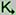
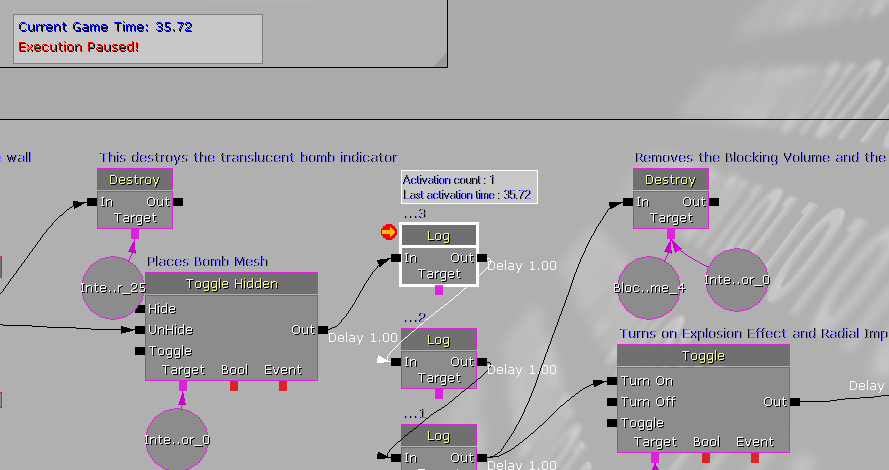
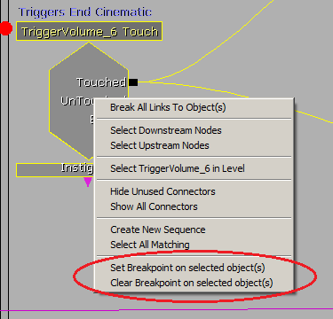
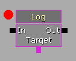
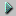
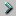
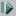
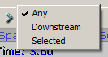

Kismet Visual Debugger User Guide
Overview
The Kismet Visual Debugger allows users to easily track the flow of Kismet sequence in realtime through the use of breakpoints on sequence objects that pause execution of the game when the sequence objects are activated. The Kismet Visual Debugger is only available when using the editor's Play In Editor functionality.
The Kismet Visual Debugger Window
Enabling and disabling of realtime Kismet debugging is done through the "Toggle Realtime Debugging" button in the editor's main toolbar.
Realtime debugging cannot be enabled or disabled while Play In Editor is active.
When enabled, if Play In Editor is used, any currently opened Kismet windows will be switched to a "debugger" mode. When Play In Editor is ended, the Kismet windows will be restored to their normal state.
If a Kismet window is closed while Play In Editor is active, Kismet window can be reopened by simply clicking the Kismet button  in the editor's main toolbar.

The upper-left corner of the graph panel has an info box containing the current runtime of the game along with an "Execution Paused!" notification when the game is paused.
Active links appear in white and active sequence objects have a white border along with an info box above them that displays how many times they've been activated along with the time the object was last activated.
An orange arrow in the upper-left corner of an object indicates which object the Kismet window is currently paused on.
Breakpoints
If Realtime Debugging is enabled, setting a breakpoint on a sequence object in Kismet will cause the game to pause (and focus to be given to the Kismet Visual Debugger window) whenever that sequence action is activated during Play In Editor. The intended purpose of breakpoints is to allow the user to better track the order of events within a Kismet sequence.
Breakpoints can be added to and removed from any sequence actions, conditions or event by right-clicking the object in Kismet's graph panel and selecting either "Set Breakpoint on selected object(s)" or "Remove Breakpoint on selected object(s)" in the context menu.

If multiple sequence objects are selected, breakpoints will be added to or removed from each selected object.
Sequence objects with breakpoints will have a red circle near the upper-left corner of the object.

Breakpoints can also be toggled on and off by holding down the Alt key when left-clicking the mouse on a sequence object.
There's also a toolbar button for clearing all breakpoints in all levels currently open in the editor.
Breakpoints can be added to and removed from sequence objects regardless of whether or not a Kismet window is in debugger mode.
Assuming realtime debugging has been enabled, when a sequence object with a breakpoint is activated while Play In Editor is active, the execution of the game will be paused, and a Kismet window in debugging mode will be opened, if one wasn't already, and the sequence object will be centered in the graph panel of the Kismet window.
Toolbar Buttons
| Icon | Description |
|---|
| | Pause – Pauses game execution (Alt+F7) |
|  | Continue – Resumes game execution (Alt+F8) |
|  | Run to next action – Runs the game until the next sequence object... see details below (Alt+F10) |
|  | Step through – Increments the game time by one unit of game time / tick (Alt+F9) |
The Run To Next button has three different behaviors that can be accessed by right-clicking the button.

"Any" just means it will run to the next activated sequence object. "Downstream" means it will run to the next activated sequence object that is directly downstream from the object that it's currently paused on. And "Selected" means it will run to the next activated sequence object that's currently selected.
Keyboard Shortcuts
From the Kismet window while in debugging mode:
| Shortcut | Description |
|---|
| Alt+F7 | Pause |
| Alt+F8 | Continue |
| Alt+F9 | Step through |
| Alt+F10 | Run to next action |
From the Play In Editor window:
| Shortcut | Description |
|---|
| Shift+F1 | Toggles whether, or not, the mouse cursor is locked to the Play In Editor window |
| Alt+F7 | Pause |
Important!
You are viewing documentation for the Unreal Development Kit (UDK).
If you are looking for the Unreal Engine 4 documentation, please visit the Unreal Engine 4 Documentation site.